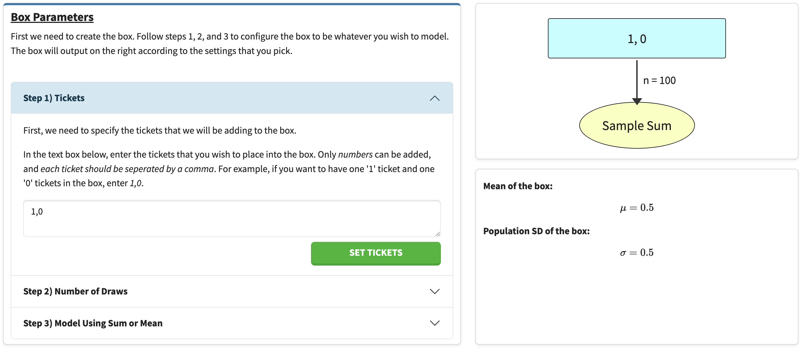
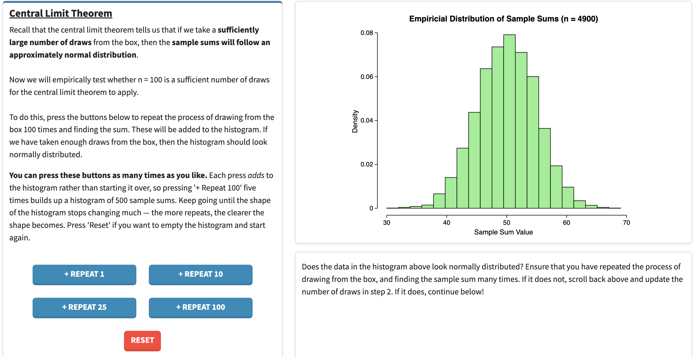
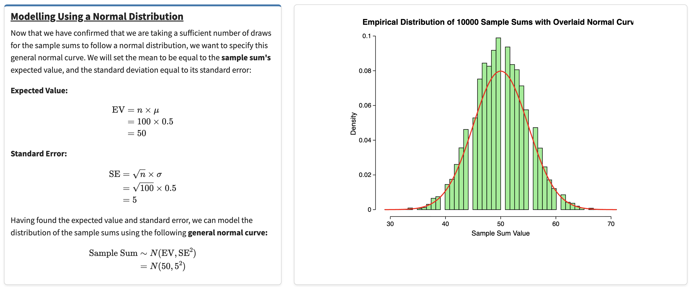
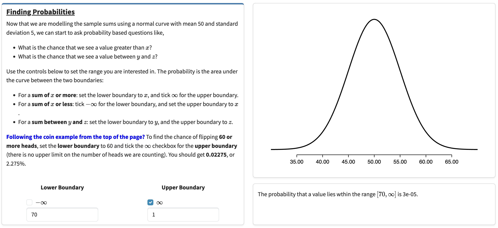
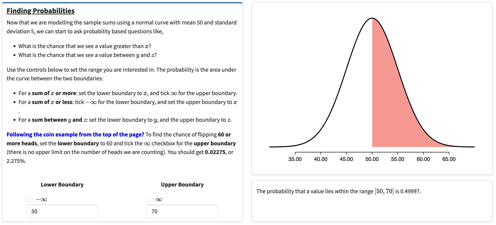
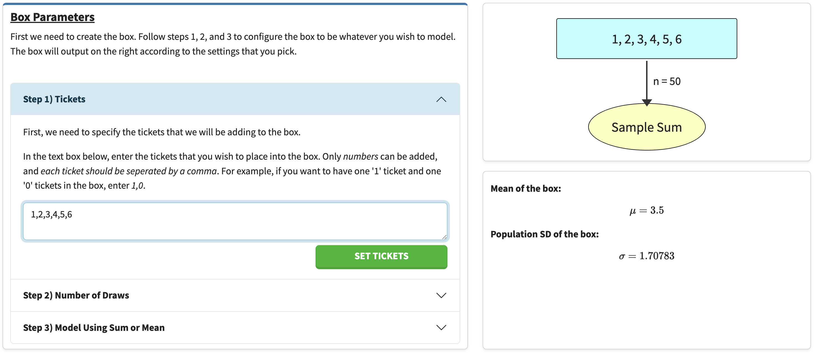
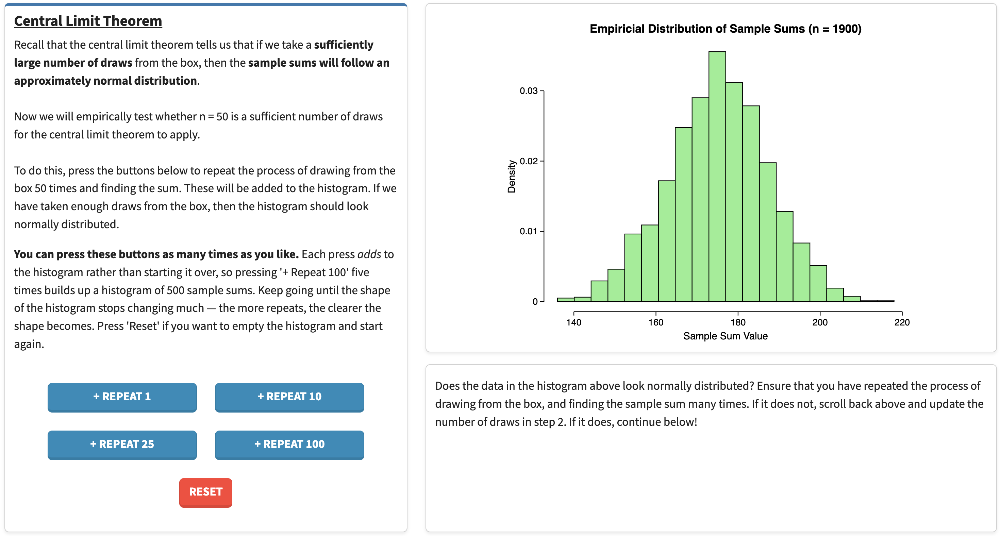
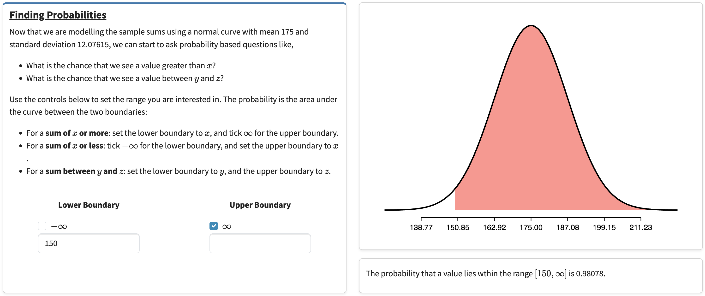
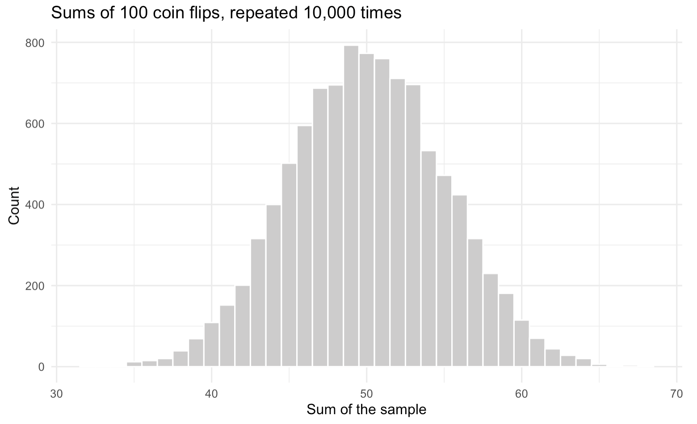
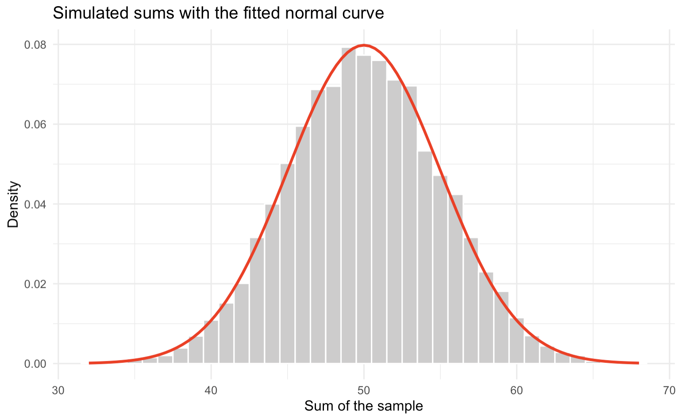

This page is about turning a box model into a probability. Work through the tasks with the interactive page open beside you.
Getting Familiar
Before doing anything else, get familiar with the theory here and with what the visualisations are trying to communicate.
-
Read the Modelling Using a Normal Distribution card at the top of the interactive page.
-
That card poses a question: what is the probability of flipping 60 or more heads out of 100 coins? It gives brief steps for answering it. You are now going to actually follow those steps in the Box Model Playground.
-
Scroll down to the Box Model Playground. Its default values are already set up for that exact question — tickets
1,0, 100 draws, summarised by the sum.Tip If you have already changed some of the values, don't worry — just refresh the page and it reloads with these defaults. -
Work down through the four sections in order, reading each one. You should not have to click many buttons yet, since this is the default example. The two exceptions:
- Central Limit Theorem — press the blue repeat buttons many times to verify that the distribution appears normally distributed. You can click them as often as you like and the histogram keeps building up. It should look normal, and if it does not, you have likely not pressed enough (hint: spam + Repeat 100).
-
Finding Probabilities — set the Lower Boundary to
60, and tick the checkbox next to the ∞ symbol for the Upper Boundary. This says we want the area over [60, ∞).
-
Check that the area you get is 0.02275 — a 2.275% chance of flipping 60 or more heads. That matches the number quoted in the card you read in step 1.
Observing 70 Heads
On the interactive site, the motivating example finds the probability of flipping 60 or more heads. What if we changed it to 70 or more? Nothing about the box changes — only the boundary we ask about.
-
In the Box Parameters section, ensure the tickets are still set to
1,0, the number of draws is still100, and that we are representing the sample using the Sum of the draws. If you've done it correctly, it should look like the screenshot below.
Figure 1 — Box Parameters set up for 100 coin flips. The quickest way to check all three settings at once is the summary on the right: the box should read 1, 0, the arrown = 100, and the outcome Sample Sum.Note If you retype the tickets, you must press Set Tickets for the change to take effect. -
Scroll down to the Central Limit Theorem section. Keep pressing the repeat buttons to verify the distribution looks normal (tip: press + Repeat 100 many, many times). It should look similar to the screenshot below — but not identical, since there is randomness involved.

Figure 2 — the distribution of sample sums after 4,900 repeats. Note the count in the plot title: that is how many times the repeat buttons have been pressed in total. -
Scroll down and note how, in the Modelling Using a Normal Distribution section, we can model the distribution using the EV and SE calculated with the formulas shown. For this box:
- EV = 100 × 0.5 = 50
- SE = √100 × 0.5 = 5
So the sample sum is modelled by a normal distribution centred at 50 with a standard deviation of 5. Do you see how the red normal curve closely follows the histogram you built up in step 2?

Figure 3 — the fitted normal curve tracking the simulated histogram. The page shows the working for both formulas, so you can check the EV and SE quoted above. -
Remember that we want the probability of flipping 70 or more heads out of 100. To find it, set the Lower Boundary to
70and tick the checkbox next to the ∞ symbol for the Upper Boundary.
Figure 4 — finding the area over [70, ∞). Note Unlike the other boundaries you will set, no red shading appears on the curve here. Nothing has gone wrong — the region really is that small. At 70 the curve has already flattened onto the axis, so there is nothing left to shade. Read the answer from the text below the plot instead.What area should I be seeing?
3e-05, which means 0.00003 — about a 0.003% chance. Flipping 70 heads out of 100 fair coins is extraordinarily unlikely: it sits four standard errors above the expected value.
-
As an extension, what if we wanted the probability of flipping 50 to 70 heads (inclusive)? Set the Lower Boundary to
50and the Upper Boundary to70— untick the ∞ checkbox if it is still ticked.
Figure 5 — the area over [50, 70] comes out at 0.49997. This time the shaded region is plainly visible: it is the entire right half of the curve. What area should I be seeing?
About 0.5. That should feel reasonable: 50 is the expected value, so half the distribution sits above it, and almost all of that half falls below 70.
Rolling a Dice (Part 1)
You have one ice cream left at home, and you and your brother desperately want it. Your brother turns to you and says, "Let's play a little game. I want you to roll a 6-sided die 50 times. Every time you roll it, write down the face that the die landed on, and at the end, add up the 50 numbers you recorded from the 50 rolls. If the sum is greater than 150, then you can have the ice cream, and otherwise, I get to eat it." You agree to his little game.
Should you be happy with that deal? Work it out with the playground.
-
In the Box Parameters section, describe this new box. The tickets are the six faces of the die, so enter
1,2,3,4,5,6and press Set Tickets. Set the number of draws to50, and leave the sample represented by the Sum — the sum is what your brother asked for.
Figure 6 — Box Parameters set up for 50 rolls of a die. Take note of the two numbers on the right, μ = 3.5 and σ = 1.70783 — they are what the EV and SE get built from in the next step. -
Go to the Central Limit Theorem section and press + Repeat 100 many times again, verifying that 50 draws is enough for the sums to look normal. Notice that it works even though the box itself looks nothing like a normal distribution — it is six equally likely values. That is the point of the central limit theorem.

Figure 7 — sums of 50 dice rolls are approximately normal, even though the box itself is six flat, equally likely values. -
In the Modelling Using a Normal Distribution section, read off the EV and SE the page has calculated. The average ticket is 3.5, so:
- EV = 50 × 3.5 = 175
- SE = √50 × 1.708 ≈ 12.08
Check that the red curve again sits neatly on the histogram.
-
In the Finding Probabilities section, set the Lower Boundary to
150and tick the ∞ checkbox for the Upper Boundary. Read off the area — that is your chance of getting the ice cream.
Figure 8 — the probability of rolling a total of 150 or more. Almost the whole curve is shaded, which is the visual version of "your brother made a bad deal". Am I in the right ballpark?
You should get something above 90% — roughly 0.98. Your brother has made a bad deal: 150 sits about two standard errors below the expected total of 175, so you win the ice cream the large majority of the time.
-
Extension. For the game to be fairer, there should be a 50% chance that either you or your brother wins. Keeping everything else the same, what should the sum be changed to instead of 150?
Show the answer
175 — the expected value. A normal distribution is symmetric about its centre, so exactly half the area lies on each side of the EV. Confirm it in the playground: set the lower boundary to 175 with ∞ above, and the area comes out at 0.5.
Implementing Task 2 in R
The steps we follow in the Box Model Playground are easy to do in R yourself. Doing so is the best way to see that the visualisation is not doing anything mysterious. You'll need the tidyverse loaded, as we will be using ggplot2:
library(tidyverse) set.seed(1) # so your numbers match the ones printed below
Step 1 — build the box and take one sample
The box holds one '1' ticket (a head) and one '0' ticket (a tail). Drawing 100 times with replacement is the same as flipping 100 coins.
box <- c(1, 0) one_sample <- sample(box, size = 100, replace = TRUE) head(one_sample, 20) sum(one_sample)
[1] 1 0 1 1 0 1 1 1 0 0 1 1 1 1 1 0 0 0 0 1 [1] 49
So that particular set of 100 flips gave 49 heads. A single sample tells us very little on its own — which is exactly why the next step repeats it.
Step 2 — repeat it, and check the shape
This is the Central Limit Theorem section in code.
replicate() is the equivalent of hammering the
+ Repeat 100 button: here we build 10,000 samples and keep the
sum of each one.
sums <- replicate(10000, sum(sample(box, size = 100, replace = TRUE))) head(sums)
[1] 53 44 55 55 52 46
ggplot(tibble(sums), aes(x = sums)) +
geom_histogram(binwidth = 1, fill = "grey80", colour = "white") +
labs(title = "Sums of 100 coin flips, repeated 10,000 times",
x = "Sum of the sample", y = "Count") +
theme_minimal()

Step 3 — calculate the EV and SE
For a sum of n draws: EV = n × (average ticket), and SE = √n × (SD of the tickets).
n <- 100 ev <- n * mean(box) ev sd_box <- sqrt(mean((box - mean(box))^2)) # population SD -- see the warning below sd_box se <- sqrt(n) * sd_box se
[1] 50 [1] 0.5 [1] 5
Do not use sd(box) here. R's sd()
divides by n−1, because it is estimating a population SD from a
sample. The box is not a sample — it is the whole population, and
we know it exactly. For our two tickets:
> sd(box) [1] 0.7071068
That is 0.707 instead of 0.5, which would give SE = 7.07 instead of 5 — a
completely different answer. Hence the longhand
sqrt(mean((box - mean(box))^2)).
Worth a sanity check: the simulated sums should have roughly this mean and spread.
mean(sums) sd(sums)
[1] 50.055 [1] 5.019611
Close to 50 and 5, as promised. (Here sd() is the right
function — sums genuinely is a sample.)
Step 4 — overlay the normal curve
This is the Modelling Using a Normal Distribution section in code.
ggplot(tibble(sums), aes(x = sums)) +
geom_histogram(aes(y = after_stat(density)),
binwidth = 1, fill = "grey80", colour = "white") +
stat_function(fun = dnorm, args = list(mean = ev, sd = se),
colour = "red", linewidth = 1) +
labs(title = "Simulated sums with the fitted normal curve",
x = "Sum of the sample", y = "Density") +
theme_minimal()

after_stat(density) rescales the histogram so its total area
is 1. Without it, the bars are counts in the thousands and the curve is
invisible along the bottom of the plot.
Step 5 — read off the probabilities
This is the Finding Probabilities section in code.
pnorm() gives the area under a normal curve to the
left of a value. For [70, ∞) we want the area to the right, so pass
lower.tail = FALSE:
pnorm(70, mean = ev, sd = se, lower.tail = FALSE)
[1] 3.167124e-05
For the interval [50, 70], subtract the area below 50 from the area below 70:
pnorm(70, mean = ev, sd = se) - pnorm(50, mean = ev, sd = se)
[1] 0.4999683
Both match what the playground displayed in Task 2 — 3e-05, and about 0.5. The interactive page is running this same calculation for you.
Bonus: how well does the simulation agree with the curve?
You can also estimate the probability straight from the 10,000 simulated sums, without the normal curve at all:
mean(sums >= 70)
[1] 0
Zero — not because it is impossible, but because a 0.003% event is not expected to turn up in only 10,000 tries. This is precisely why we model with the normal curve rather than simulating: the curve still gives sensible answers far out in the tails, where simulation runs out of data.
Rolling a Dice (Part 2)
Remember your brother from before? Well, next week, you and your brother are in the same predicament. One ice cream left — who gets it? Your brother proposes a new game. You roll a 6-sided die 50 times and take the sum, just as you did last time. If the sum is between 145 and 175 (inclusive), you get the ice cream. Otherwise, your brother gets it.
What is the probability that you get the ice cream? No step-by-step this time — you have already done every part of this in Task 3.
Show the answer
About 0.49, so slightly under half. The box is unchanged from
Task 3 (tickets 1,2,3,4,5,6, 50 draws, sum), giving
EV = 175 and SE ≈ 12.08. This time set the Lower Boundary to
145 and the Upper Boundary to 175,
with neither ∞ checkbox ticked.
In R:
box <- c(1, 2, 3, 4, 5, 6) n <- 50 ev <- n * mean(box) se <- sqrt(n) * sqrt(mean((box - mean(box))^2)) pnorm(175, mean = ev, sd = se) - pnorm(145, mean = ev, sd = se)
[1] 0.4935085
Notice the asymmetry that works in his favour. The upper boundary is exactly the expected value, so the interval captures only the bottom half of the distribution, and 145 is far enough below the centre that it cuts off very little. Your brother has learned from last week.